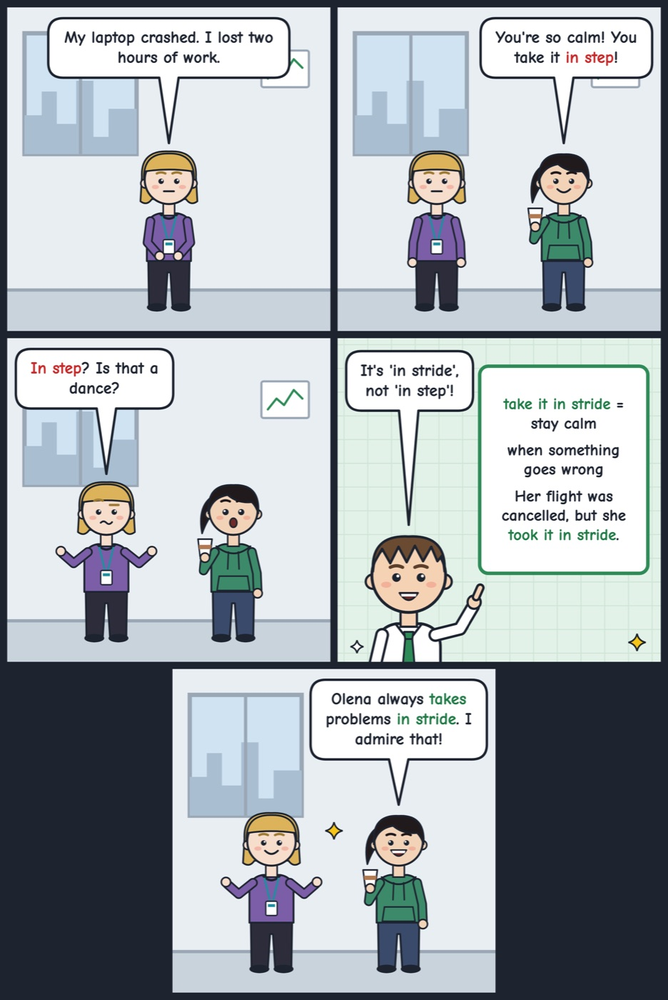

take it in stride
To accept a problem calmly without getting upset.
Her flight was cancelled, but she took it in stride and read a book.
Say 'take it in stride' to mean you accept a problem calmly.

Your turn
Do you usually take problems in stride?
Do you usually take problems in stride?